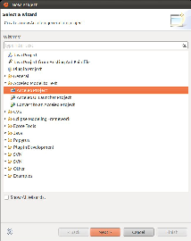
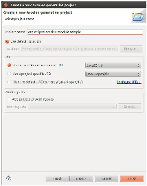
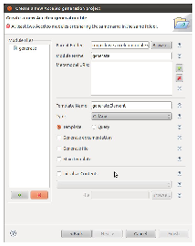
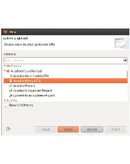
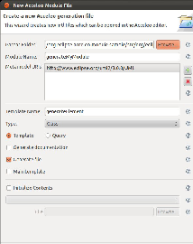

This generators allowed to generate source code from the RobotML model to some middleware or simulator. They are include in the RobotML platform, and using Acceleo to browse the RobotML model.
List of the RobotML platform generators:
In your Project explorer view, do right clic and select New/Project... In the New project window, choose Acceleo prject in the Acceleo model to text category, and clic on Next.
In the window Create a new Acceleo generator project, name your project, and select the 1.5 JAVA version (J2SE-1.5). Clic on Next.
Now named your new module, and on the add button in the metamodel section. A metamodel list is shown. Select your metamodel should to use, and clic on OK. For example if you should use UML, select http://www.eclipse.org/uml2/3.0.0/UML in the developpement time version tab.
Note
If you should use a custom domain specific language, select your metamodel in the Runtime version tab.
Select your module type:
Clic on Finish
Your new RobotMLGenerators will added in your Project explorer. Now
On your Acceleo generator project, do right clic, and select new/Other.... Chosse Acceleo module file in the category Acceleo model to text, and clic Next.
Name your module, select the metamodel should to use, and select the module type. Clic on Finsih.
See also
How to create a new RobotML generator
Import the RobotML generator project in your workspace (org.eclipse.robotml.generators.generator.ui). Open the file MANIFEST.MF and slect the Dependencies tab. In the Required plug-in section, add your generator plug-in. In the package org.eclipse.robotml.generators.generator.ui.xml, open the file config.xml, and add you generator declaration int the generator_list node.
The following example show how to declare generators:
<robotml>
<domain_list>
<domain name="athenaDSL">
<implementation class="org.xtext.athenaDSL.impl.AthenaDSLFactoryImpl" method="init"/>
<implementation class="org.xtext.athenaDSL.impl.AthenaDSLPackageImpl" method="init"/>
</domain>
</domain_list>
<generator_list>
<generator name="athena" id="org.eclipse.robotml.generators.acceleo.athena" class="org.eclipse.robotml.generators.acceleo.athena.files.GenerateAthena" src-type="model" target-folder="athena"/>
<generator name="vle" id="org.eclipse.robotml.generators.xtext.athena.vle" class="org.eclipse.robotml.generators.xtext.athena.vle.main.GenerateVLE" src-type="file" src-ext="adl" target-folder="vle-generated-src" src-enerator="athena"/>
<generator name="athena-simu" id="org.eclipse.robotml.generators.xtext.athena.simu" class="org.eclipse.robotml.generators.xtext.athena.simu.main.GenerateAthena" src-type="file" src-ext="adl" target-folder="simu-athena-generated-src" src-generator="athena"/>
</generator_list>
</robotml>
| Node | Attribute | Description |
|---|---|---|
| robotml | Root node. | |
| domain_list | Declaration node for a domain list. | |
| domain |
|
Domain language declaration. - Language name. |
| implementation |
|
Implementation declaration. - Class containing the method to call. - Method name to call. |
| generator_list | Declaration node for a generator list. | |
| generator |
|
Generator declaration. - Generator name. - Generator ID (org.eclipse.robotml.generators.XXX). - Generator class. - Source type (model or file). - Source file extension (Only if src=”file”). - Target folder name. - Name of the source generator used to generate the source file (only if src=”file”). |
Note
If your should to define a new Domain Specific Language, you shoukd to declare it on the file config.xml. Add a domain node, and specify the implementation to initialize your domain language (see the example).
In your Acceleo generator project,, do right clic, and select Acceleo/Create Acceleo UI launcher. Name you UI project, clic on Next. Select the project who will be called by your interface.
Give a label to your generator.
Warning
This label will be visible in the environment context menu.
Choose your working file filter. Your generator interface will be visible only if the selection match this file filter. Clic on Finish.
In your Acceleo User interface project, open the file GenerateAll.java, and modifiy the method doGenerate() as following:
public void doGenerate(IProgressMonitor monitor) throws IOException {
if (!targetFolder.getLocation().toFile().exists()) {
targetFolder.getLocation().toFile().mkdirs();
}
monitor.subTask("Loading...");
//GenerateXXX is the main class of the RobotML generator. By convention, <XXX> is the name of the generator.
//Example for `Athena` langauge, the name of the main class is GenerateAthena.
GenerateXXX generator = new GenerateXXX(modelURI, targetFolder.getLocation().toFile(), arguments);
monitor.worked(1);
String generationID =
org.eclipse.acceleo.engine.utils.AcceleoLaunchingUtil.computeUIProjectID("org.eclipse.robotml.generators.acceleo.XXX",
"org.eclipse.robotml.generators.acceleo.athena.files.GenerateXXX",
modelURI.toString(),
targetFolder.getFullPath().toString(),
new ArrayList<String>());
generator.setGenerationID(generationID);
generator.doGenerate(BasicMonitor.toMonitor(monitor));
}
In your project explorer view, select your RobotML generator, and do right clic. Choose, Run as.../Eclipse application. A new eclipse applciation start. In this new envioronment, import the needed files to execute your generator, then select a imported file, do right clic. The contextual menu, should contain your gnerator label. Select it to execute your generator.
In exception, if you using particular metamodel, it’s necessary to register it befor using. For example : if you use the DSL Athena, you should to initialized it with the following methods in your user interface code.
AthenaDSLFactoryImpl.init();
AthenaDSLPackageImpl.init();
You need also to modifiy the RobotML generator code registerPackage method as following:
public void registerPackages(ResourceSet resourceSet) {
super.registerPackages(resourceSet);
if(!isInWorkspace(org.xtext.athenaDSL.AthenaDSLPackage.class)) {
resourceSet.getPackageRegistry().put(org.xtext.athenaDSL.AthenaDSLPackage.eINSTANCE.getNsURI(),
org.xtext.athenaDSL.AthenaDSLPackage.eINSTANCE);
}
}
Warning
Do not forget replace the tag @generated by @generated not to not loosing your modification, when you modifiy the template file module.